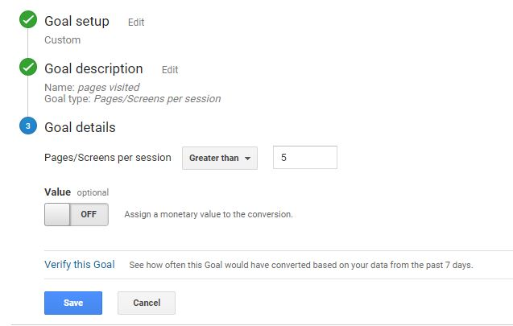
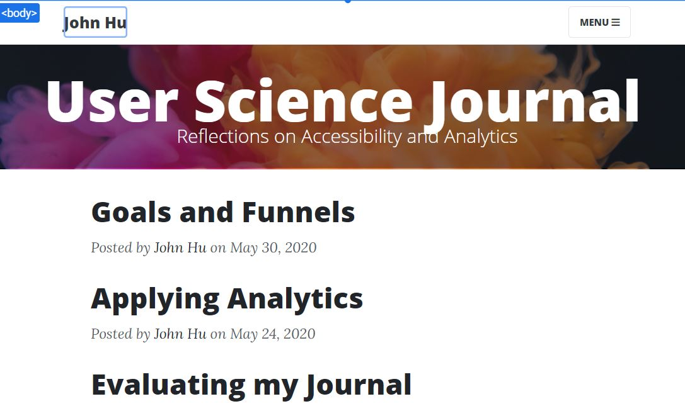
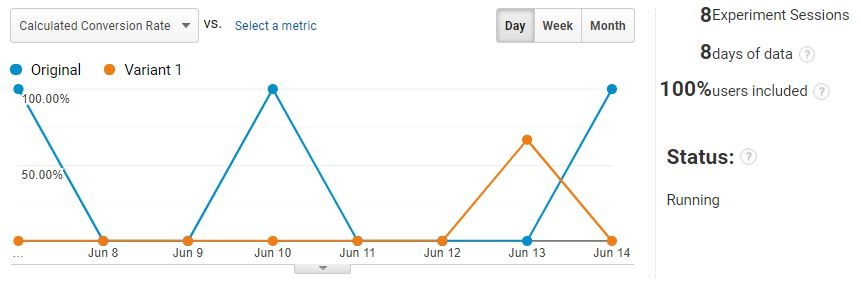
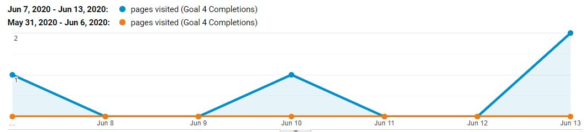
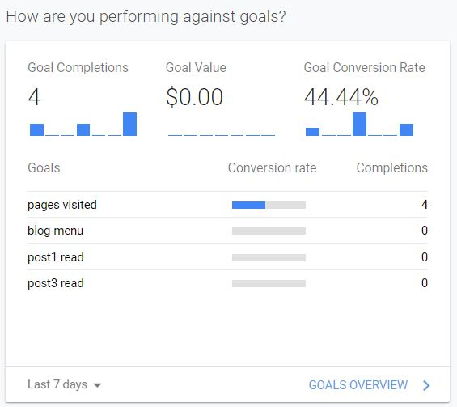

The Story So Far
For the past month, I have been evaluating accessibility, applying analytics, and optimizing goal conversion for my user science journal. I had chosen the goal of letting the user visit at least 5 unique pages. The idea was that more page views would be an indicator of user engagement.
Eventually I figured that a content experiment was in order. I started a "new experience" using Google Optimize, choosing an A/B Test between the original and a new variant. I made a few changes that appeared minor on the surface but that I thought would impact the user experience.
 The feed was aligned to the left and the header was made smallerAfter a week of running the experiment, there did not appear to be a clear winner. Viewing the conversion comparison chart on the other hand, the original seemed to be performing better than the variant, though the actual ratio between the original and the variant is 3:2, not far off from each other.
In contrast to what these results seem to indicate, the general number of conversions has been fluctuating since last week when I made the changes, compared to zero conversions in the week prior. I decided to be skeptical in my reading of these results.
Usability Test
Since I could not reach a clear conclusion based on the data alone, I decided to do an additional usability test. This test involved the user accessing the site on his mobile device. My first observation was that the user struggled for a few seconds to decide which post to select. The navigation menu was ignored.
After reaching the end of the post that he selected, he was quick to point out that there was no easy way to view another post. The only way was to scroll back to the top and open the blog menu. This made me realize that adding "next" and "back" buttons could hold the key to optimizing the goal completion rate.
Conclusion
I've learned a great deal about the differences between content experiment and usability testing in how the data is collected and evaluated. I would think that both can be used effectively in tandem, and either of them could be used based on the situation. While there were a few instances of uncertainty about whether tracking features were working, the interface was approachable and help resources for Analytics were abundant.
 The dashboard has the familiar Google Material Design that make it easy to read the dataNext Steps
The biggest lesson I learned is that direct evidence beats conjecture. The subtle changes in my content experiment, while well-intentioned, was not based on a factual understanding of what would boost conversions. Instead, it was through the usability test that I learned the real barriers to optimizing the goal conversion.
I have decided that, in future, usability tests should come before content experiments. Through knowing the precise issues users face, there is a stronger context for design iterations. After all, the user is always the one who will identify roadblocks that I wouldn't otherwise see as the creator. Analytics may be useful for marketing and helping paint a clear picture of business results, but field testing will most likely be far more reliable for user experience purposes.